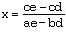

In chapter 5 the matrix was defined and modelled by a two dimensional array. Matrices have a number of applications in various branches of mathematics, and are useful entities for study in their own right.
Addition and Subtraction:
If two matrices are the same size (have the same number of rows and columns) then addition is done component by component in the same fashion as for vectors. Subtraction is just adding the opposite. Thus, if
andThen
andOne Modula-2 procedure that can do the first of these operations is given below. It uses open array parameters and returns the result of checking for valid data in a boolean parameter.
PROCEDURE AddMatrices (A, B: ARRAY OF ARRAY OF INTEGER;
VAR C: ARRAY OF ARRAY OF INTEGER; VAR ok: BOOLEAN);
VAR
aRow, aCol, bRow, bCol, cRow, cCol,
rowCount,colCount : CARDINAL;
BEGIN
aRow := HIGH (A);
bRow := HIGH (B);
cRow := HIGH (C);
aCol := HIGH (A[0]);
bCol := HIGH (B[0]);
cCol := HIGH (C[0]);
IF (aRow #bRow) OR (aRow # cRow) OR (aCol # bCol) OR (aCol # cCol)
THEN
ok := FALSE;
RETURN; (* gives up *)
ELSE
ok := TRUE;
FOR rowCount := 0 TO aRow
DO
FOR colCount := 0 TO aCol
DO
C[rowCount, colCount] :=
A[rowCount, colCount] + B[rowCount, colCount]
END
END
END
END AddMatrices;
A similar method can be used to write a procedure SubMatrices to subtract two matrices. Products of matrices are more complicated. First, the product of a row by a column of the same length is defined as the matrix whose single entry is the sum of their component-wise products. That is, if
andthen AB = [1(2) + 4(3) + 0(5) + -7(1)] = [7]
If A is a matrix with n rows each of length m (n by m) and B is a matrix with n columns each of length m (m by n), then the product AB is defined by calculating its ijth entry as the product of row i in A by column j in B in the sense shown above. Thus if
and
then
andNote that not only is AB not equal to BA, one product may be defined when the other is not. For instance, if A has four rows and five columns, then AB is defined provided B has 5 rows. BA is defined if B has 4 columns. So, if B is five by two, AB can be computed, but not BA. With this information in hand, it is an easy matter (left for the student as an exercise) to write:
PROCEDURE MulMatrices (A, B: ARRAY OF ARRAY OF INTEGER; VAR C: ARRAY OF ARRAY OF INTEGER; VAR ok: BOOLEAN);
Matrices are used in the solution of a variety of problems, particularly those requiring the solution of systems of linear equations.
The basic cost of manufacturing shirts retail is $3.00. For every dollar over this price, the manufacturer is willing to produce another hundred shirts. (Below this, she will of course produce none.) For their part, the maximum consumer demand is for 1000 shirts, but that is only if they are given away for nothing. For each dollar increase in price, the demand is reduced by 125 shirts. Assuming an orderly and rational market, at what level will the sales and price of shirts settle?
This is a simple example of supply and demand economics. It ignores the effect of wholesalers, taxes, and subsidies and presents a rather simple market pattern. Nonetheless, it serves as a starting point for the examination of a variety of similar problems, and for the abstraction of solution techniques.
Representing the quantity of shirts by n and the price by p, the relationship in the data provided are:
n = 100(p - 3.00) for the supply of shirts
n = 1000 - 125p for the demand
The market should settle at a point where demand quantity and price match supply quantity and price; that is, at the point represented by the solution to these two equations.
If the two equations are graphed, straight lines are produced, and a visual inspection reveals that they cross at a price of about $5.75 and a quantity of about 275. (Figure 7.1)
An equation in two variables that can be written in the form ax + by=c (a and b not both zero) is called a linear equation. The point at which the straight lines represented by two such equations cross is called the solution to the system of simultaneous linear equations.
A graphical solution of such equations is not sufficiently accurate, however, and it is more profitable to use an algebraic analysis. The common method is called Gaussian elimination, and is based on the simple notion that equal numbers can be added to both sides of any equation without disturbing its truth value(s) ( that is, its solution[s]). Given the linear system:
x + y = 7
x - y = 19
and regarding the second as an equality of numbers to be added to the first, one adds the left-hand-sides and right-hand sides to obtain
2x = 26 (the y-variable has been eliminated)
and then proceeds to multiply both sides by one-half to obtain
x =13
Now, substituting this value into one of the originals gives y = -6 and the solution (13, -6) as the (x, y) pair that simultaneously satisfies both equations.
One or both of the equations may need to be multiplied on both sides by an appropriately chosen constant before adding to eliminate one or the other variable. Thus one rewrites the system
2x + y = 7 multiply by 4
3x - 4y = 5
as the equivalent system
Substituting this value in one of the original equations produces the solution (3,1).
Likewise, the system
3s + 4t = 7 * 4
4s - 5t = 1 * -3
can be re-written as
or, by multiplying by 5 and 4, respectively, as
and the solution (s, t) = (1, 1)
In the case of the initial supply and demand example, the system
n = 100 (p - 3.00)
n = 1000 - 125p
is re-written first as
n - 100p = -300
n + 125p = 1000
Multiplying the first by -1 and adding yields
225p = 130
p = 5.76 (nearest cent)
Likewise, multiplying the first by 5 and the second by 4 yields
The actual solution (6.76, 278) is quite close to the visual estimate.
Gaussian elimination can be abstracted. Starting with:
ax + by = c
dx + ey = f
and using Gaussian elimination, first eliminating y by multiplying by e and -b respectively yields:
aex + bey = ce
-bdx - eby = -fb
so that, adding these two produces
(ae - bd) x = ce - fb
whence

Then, eliminating x by multiplying the original equations by d and -a respectively yields
Now consider the form of the numerators and denominator of the two fractions in this solution. These three numbers are all of the same kind. If the various coefficients are written in the matrices below, with the first being the original coefficients, and the second and third having the column of coefficients from the right hand substituted for the x-column, and the y-column of coefficients respectively,

and in each case, if the a11 and a21 terms are multiplied and then the product of the a12 and a21 terms is subtracted from this, the results are:
ae - bd, ce - fb, and af - cd.
In a two by two matrix A, the product a11 a22 - a12 a21 is called the determinant of A.
The determinants of matrixes constructed from the coefficients of a linear equation, by substituting the constants from the right hand side of the equation for either the coefficients of x or y are denoted Dx and Dy respectively.
The solution of the system can therefore be expressed in terms of determinants as
where D is the determinant of the coefficient matrix.
This method is called Cramer's rule, and it extends to systems with a larger number of variables as well. It turns out that the determinant of a three-by-three matrix is computed from two-by-two sub-determinants as follows. Given:
where the Mij are called minors and are obtained by crossing out the ith row and the jth column of the original matrix and working temporarily with whatever is left. The sign of each term is computed by (-1)^i+j and so is positive when (i + j) is even, and negative when (i + j) is odd.
Notice that because of the definition of determinants in terms of the determinant of successively smaller matrices, (until one reaches a two by two matrix, for which the calculation is easy), determinants are inherently recursive. In this particular case, the recursive expansion by minors has been done by targeting the first row elements and using the corresponding minors. This is usual, but it turns out that any row or column could have been used. (For a discussion of why this is so, see an appropriate text on linear algebra). Since the definition is recursive, it can be used to compute the determinant of a matrix of any size, provided that sufficient computational power is available to do all the calculations..
Cramer's rule for a system of three equations in three variables can now be expressed as
It is also useful to employ the notation of indicating the determinant of a matrix by using vertical bars rather than brackets around the array of numbers. This notation resembles that of absolute value as used with real numbers.
x - 7y + 2z = 7
3x + y - z = 5
2x -3y + z = -10
has the solution calculated as above where
In order to code this, it is necessary to keep track (at each level of recursion) which rows and columns have been "crossed out". This is easy to do for the rows, as the expansion can be performed on the top row of the minor each time. The trap door for escaping from the lowest level of the recursive calls can be the fact of having arrived at the second-to-last row, for then all but two rows have been expanded upon and crossed out, and only a two-by-two minor remains to be computed. Suppose, for example, while calculating the determinant:
one expanded on the first row, working column by column with the minors in the usual way. At, say the calculation of the third minor, one conceives of the remaining active items of the matrix for subsequent recursive steps looking like:
If one now continues recursively, expanding on the first row of this, then the first minor calculation leaves the active items:
If as the recursion has proceeded, a record has been kept as to which columns have been crossed out, it is a simple matter now that the second-to-last row has been arrived at to scan that record for the first two active columns and perform the simple computation that yields the determinant of this two-by-two minor. Keeping track of what columns have been crossed out presents some difficulty. Each cross out needs to be recorded, and this task requires data space. The storage needs for this of a general purpose recursive procedure that is supposed to operate on any two dimensional open array parameter cannot be pre-determined, so the procedure itself must find a way to reserve sufficient memory. This could be done by using a second (one-dimensional) open array parameter of the same length as the number of columns in the matrix. The simplest and most obvious way to do this might be be to write:
PROCEDURE Determinant (theMatrix: ARRAY OF ARRAY OF REAL;
crossed: ARRAY OF BOOLEAN) : REAL;
where the second array was the same length as the number of columns (i.e. the length of a row) in the first matrix. It would be up to a client program to declare and pass an array of booleans of the correct size to work with the matrix parameter being used. This approach, however, burdens the client program with more detail than should be used in an abstract approach. It ought to be possible to invoke a procedure to do a determinant computation without requiring the user of the procedure to be concerned with such details.
A solution can be had to this difficulty if the main procedure is simply a shell, and it calls the recursive procxedure with an extra parameter for the storage space. The difficulty lies in the main procedure having to compute the size of this second parameter. One might be tempted to write:
PROCEDURE Determinant (theMatrix: ARRAY OF ARRAY OF REAL): REAL;
VAR
temp = ARRAY [0 .. HIGH (a)] OF BOOLEAN; (* not allowed *)
PROCEDURE Det (aMatrix: ARRAY OF ARRAY OF REAL;
crossed: ARRAY OF BOOLEAN): REAL;
(* body of Det with working code here *)
END Det;
BEGIN (* main *)
RETURN Det (theMatrix, crossed);
END Determinant;
However, a Modula-2 compiler has to be able to calculate the storage space for all variables declared under a VAR heading, and the size of temp is not available until run time. Consequently, Modula-2 does not allow the declaration of arrays using run time calculations such as this. Therefore, another approach to obtaining a data storage of the right size for marking off columns is needed.
Recall that a value parameter makes a copy of data and allows it to be modified without affecting the original. Also recall that a two dimensional array of items (an ARRAY OF ARRAY OF item) can be thought of as a one dimensional array of rows. Thus, if one row (say, the first) of the original matrix is passed to a formal value parameter, a sufficient number of data items will be available within the procedure to flag columns. These items will be of a numeric type rather than the type BOOLEAN, but that is of no consequence, as numeric values can be chosen to indicate the (inherently BOOLEAN) values crossed and not crossed. When the recursive procedure is first entered, it can set the values of these data items to some non-zero value (representing not crossed); on a subsequent call the entry can be set to zero (representing crossed) in the column being crossed out for that call. Since the rows employed for this purpose are to be value parameters, there is no threat posed to the values of the original matrix by making use of a copy of one of its rows for something else. Moreover, when one backs out through the levels of the recursion, the record of columns crossed out is preserved at each level, for alterations made at deeper levels are again made on a copy of the row.
This leads to the employment of two more parameters in the header of the recursive procedure, for it must always have available the number of the row being expanded upon (for the multipliers of the minors) and the column number currently being used (and that it must therefore cross out). Taking all these ideas into consideration leads to the following pseudocode:
function procedure determinant
parameter: open m by n two-dimensional array of real
returns: the determinant of the array.
calls the recursive procedure dMinor, passing
the original array
the first row of the original array
0,0 as the row and column being expanded on.
function procedure dMinor
parameters: open n by n two-dimensional array of real
: open length n one-dimensional array of real (crossed)
: the row and column being expanded on (cardinals)
returns: the determinant of the (row, column)th minor
if row is 0
call fix row to ensure all items in array crossed are non-zero
else
columnth element of crossed is set to 0
end if
if row is n-2, call scan to get the first and second column numbers to use
return a [n-2, first Col] x a [n-1, second Col]-
a [n-1, first Col] x a [n-2, second Col]
else
set sum to zero
set col count to zero
while col count < n
if crossed [col count] # 0 (* use active columns only for minor *)
add to sum sign (row, col) * a [row, col count] * DMinor (a, crossed,
row + 1, col count)
alternate sign
end if
increment col count
end while
procedure scan
parameters: open one-dimensional array of real of length n
:a cardinal indicating the last column to check
:(out) two column numbers
set count to zero
set got to zero
while count < n - 1 and got <2
if a [count] # 0
if got = 0 then first = count
if got = 1 then second = count
increment got
end if
increment count
end while
Translating into Modula-2 (with the independent procedures first and the dependent one last) yields the code below. Note that the procedure FixRow was not given in the pseudo-form, as it is quite simple.
(* auxiliary procedures for the main calculation *)
PROCEDURE FixRow (VAR theRow: ARRAY OF REAL);
(* Pre: none
Post: all elements 0..hi of the row are non-zero *)
VAR
count: CARDINAL;
BEGIN
FOR count := 0 TO HIGH (theRow)
DO
theRow [count] := 1.0;
END;
END FixRow;
PROCEDURE Scan (theRow: ARRAY OF REAL; max: CARDINAL;
VAR first, second: CARDINAL);
(* Pre: none
Post: returns the first two column positions in the row (up to max) where the item is non-zero *)
VAR
count, got, cols : CARDINAL;
BEGIN
count := 0;
got := 0;
cols := HIGH (theRow);
WHILE (count <= cols) AND (got < 2)
DO
IF theRow [count] # 0.0
THEN
IF got = 0
THEN
first := count;
INC(got);
ELSIF got = 1 THEN
second := count;
INC(got);
END; (* IF got = 0 *)
END; (* IF a [count] *)
INC (count);
END (* while *);
END Scan;
(* this is the procedure that actually does the work *)
PROCEDURE DMinor (VAR a : ARRAY OF ARRAY OF REAL; (* matrix *)
crossed: ARRAY OF REAL; (* for crossed out rows *)
row, col: CARDINAL) : REAL;
VAR
size, colcount, firstCol, secondCol: CARDINAL;
sum, sign: REAL;
BEGIN
size := HIGH (a); (* number of rows *)
IF row = 0
THEN
FixRow (crossed);
ELSE
crossed [col] := 0.0;
END;
IF row = size - 1
THEN
Scan (crossed, size, firstCol, secondCol);
RETURN a [size - 1, firstCol] * a [size, secondCol]
-a [size, firstCol] * a [size - 1, secondCol];
ELSE
sum := 0.0;
colcount := 0;
sign := 1.0;
WHILE colcount <= size
DO
IF crossed [colcount] # 0.0
THEN
sum := sum + (sign * a [row, colcount]
* DMinor (a, crossed, row + 1, colcount));
sign := -1.0 * sign; (* alternates *)
END; (*if *)
INC (colcount );
END; (* WHILE *)
RETURN sum;
END; (* IF row = size - 1 *)
END DMinor;
(* finally, the procedure that would be exported from a library *)
PROCEDURE Determinant (theMatrix: ARRAY OF ARRAY OF REAL): REAL;
BEGIN
RETURN DMinor (theMatrix, theMatrix[1], 0, 0);
END Determinant;
The client using this latter procedure still has to be able to substitute columns appropriately before involving Determinant. To do this, it needs access not only to the coefficients on the left-hand-side of the equation, but also to the constants on the right. For this purpose, it is often useful to employ an augmented matrix of n rows by n + 1 columns with the last column being the constants on the right-hand-side. In such a method, the equations
x - 3y + 7z = 4
2x + 5y - z = l0
3x - y + 15z = -5
give rise to the so called augmented matrix:
The bar before the last column is written to emphasize the nature of the matrix as a three by three matrix of coefficients augmented by the column constants from the right hand side. The practitioner who is used to these will usually not use the bar. Also, in common use, employing x,y, and z for the variables loses generality and restricts one to the number of letters available. It is better to denote them x1, x2, x3, .........xn. The solution to the system is given by the Di/D, employing the same notation as previously.
D can be found by passing the entire n by n+1 matrix to the procedure determinant, as the latter ignores the last column. To compute Di, it is necessary to use an intermediate step that places column n into column i before calling Determinant. This is formulated as:
(* the next one is for use with Cramer's rule. It does a substitution first, then computes the determinant. *)
PROCEDURE DetJ (a: ARRAY OF ARRAY OF REAL; col: CARDINAL): REAL;
(* Pre: none
Post: the column at position col is replaced by last column in the array passed. *)
VAR
count, size: CARDINAL;
BEGIN
size := 1 + HIGH (a);
FOR count := 0 TO HIGH (a)
DO
a [count, col - 1] := a [count, size];
(* recall that column numbering inside starts at zero *)
END;
RETURN Determinant (a);
END DetJ;
One potential difficulty remains to be considered. If one of the equations has coeffiecients that are multiples of those belonging to another equation in the set, there will not be a unique solution to the system. In such cases, the determinant of the coefficient matrix will be zero. To avoid a run time error, this possibility must be checked before performing the division Di/D. A client program containing an n row by n+1 column augmented coeffient matrix coefMat and a vector solution of length n could employ the following code to determine the solutions:
det := Determinant (theMatrix);
WriteString ("The determinant is ");
WriteFixed (det, 5, 0);
WriteLn;
IF ABS (det - 0.0) > 0.001
THEN
WriteString ("The solutions by Cramer's Rule are: ");
WriteLn;
FOR count := 1 TO n
DO
WriteString ("x");
WriteCard (count, 0);
WriteString (" = ");
WriteFixed (DetJ (theMatrix, count) / det, 5, 0);
WriteLn;
END; (* for *)
ELSE
WriteString ("There are no unique solutions.");
WriteLn;
END;
Notice that no attempt has been made to distinguish between the case where there is no solution, for instance:
2x + y = 7
2x + y = l3
where the elimination method produces 0 = 6 (inconsistency) and the case where there are many solutions, for instance:
x + 2y = 5
2x + 4y = 10
where the elimination method produces 0 = 0 (the equations are dependent--i.e. essentially the same equation). Both of these yield a zero determinant for the coefficient matrix, so the two situations must be distinguished in some other way. This discrimination can be made more easily using methods other than computing the determinant, but that has been left either as an exercise or for discussion by a text more specifically dedicated to this topic.